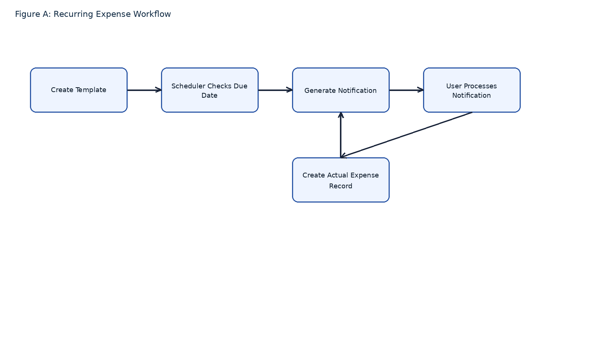
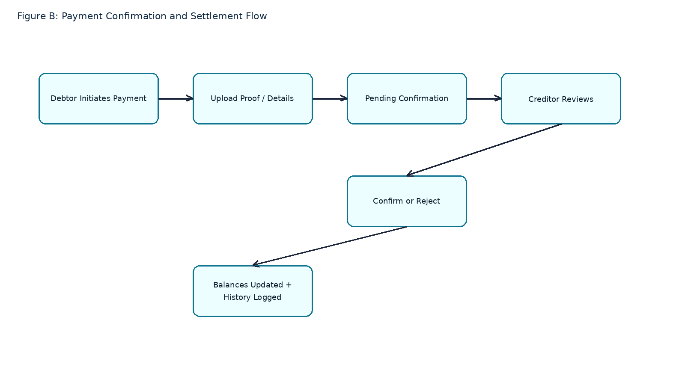
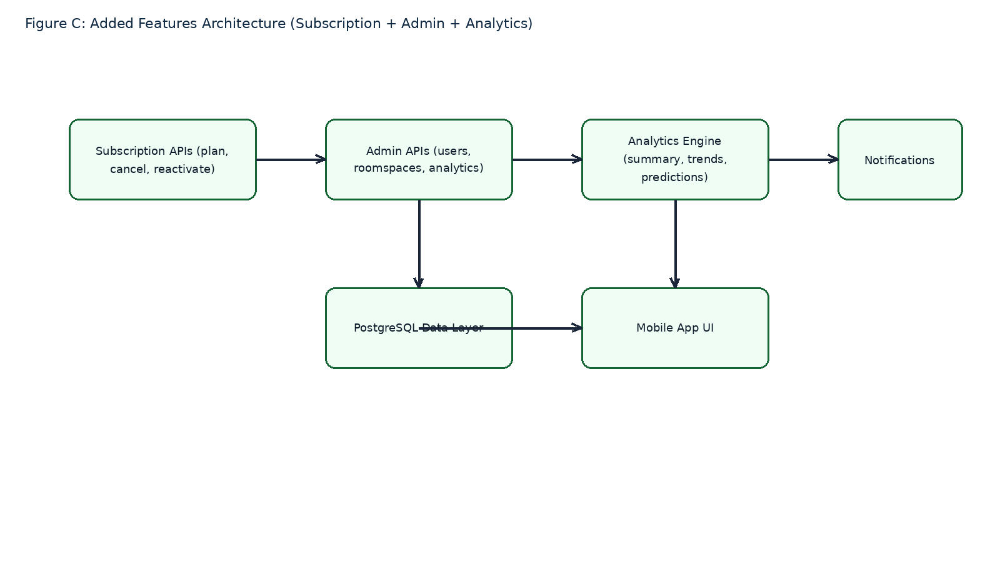
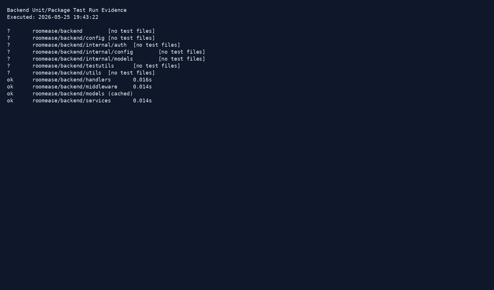

This document contains only the remaining report content requested after subsystem implementation screenshots. The following features were implemented beyond the initially proposed scope and are supported by diagrams for inclusion in the final report.
RoomEase now supports recurring expense templates that can be scheduled, notified, and processed into real expense records without manual recreation each cycle. This reduces repetitive input and improves consistency in recurring costs such as rent, internet, and utility payments.

A complete payment confirmation subsystem was introduced to reduce disputes. Payers submit confirmation details, creditors verify or reject, and settlement records update transparently. This adds trust and traceability to roomspace-level settlements.

The final system includes subscription lifecycle endpoints (current plan, cancel, reactivate, history), admin-level oversight APIs for users/roomspaces/analytics, and expanded analytics services (summary, trends, patterns, predictions, anomalies, recommendations). These capabilities exceed baseline proposal requirements and align the system with deployable product needs.

| Category | Status | Assessment |
|---|---|---|
| Originally Proposed Core Features | Completed | Core scope implemented across authentication, roomspaces, expenses, balance settlement, and analytics. |
| Beyond-Proposal Features | Completed | Recurring expense automation, payment confirmation workflows, subscription management, and admin analytics are implemented. |
| Product Readiness | Improved | Additional features improve reliability, governance, and real-world usability. |
Backend tests were executed using Go test commands in the project backend module. The test run confirms successful execution for packages containing tests (handlers, middleware, models, services).

go test ./... -cover currently fails in this repository with module-resolution issue (package roomease/backend: cannot find package) while standard test execution succeeds. Keep this note if strict evidence traceability is required.
API test cases are now organized subsystem-wise in Bruno under backend/api-test/, with dedicated request files per endpoint and shared collection variables in common/00-collection-vars.bru.
Prepared on: 2026-05-25